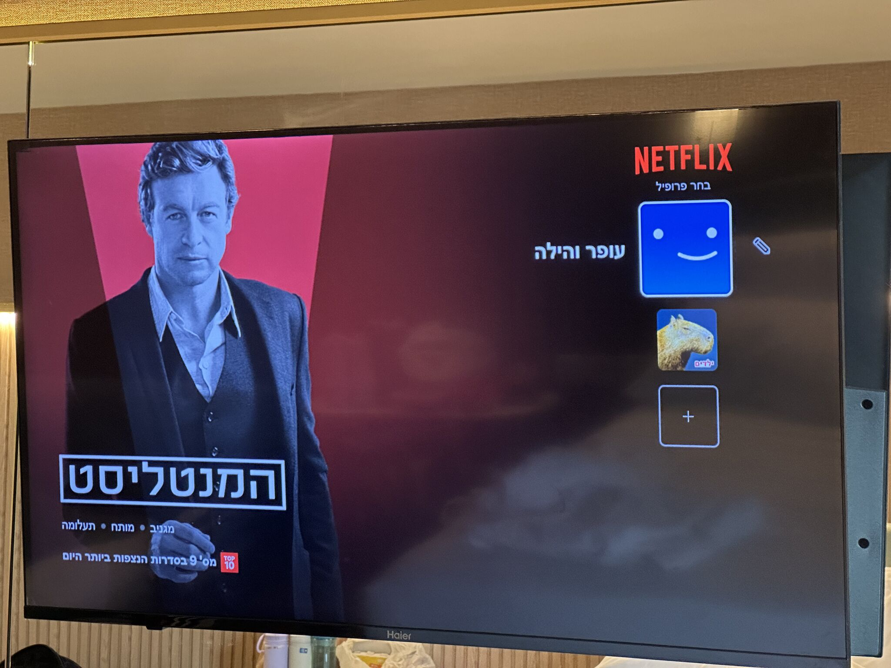

חווית המשתמש של נטפליקס גאונית
פורסם במקור ב LinkedIn
חווית המשתמש של נטפליקס גאונית
בחדר זר במלון אני פותח טלויזיה זרה ושם מופיע לי איקון של נטפליקס. אני לוחץ עליו, סורק את הברקוד עם הטלפון, קליק אחד על כפתור ואני מחובר למנוי האישי שלי עם היסטוריית הצפיה שלי. לרגע אני מרגיש שוב בבית. הילדה בת ה5 לוקחת ממני את השלט ומנווטת לבדה לסדרה שלה.
